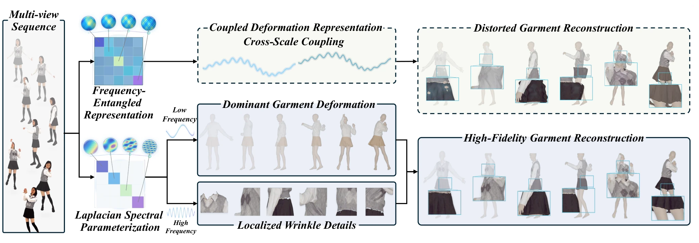
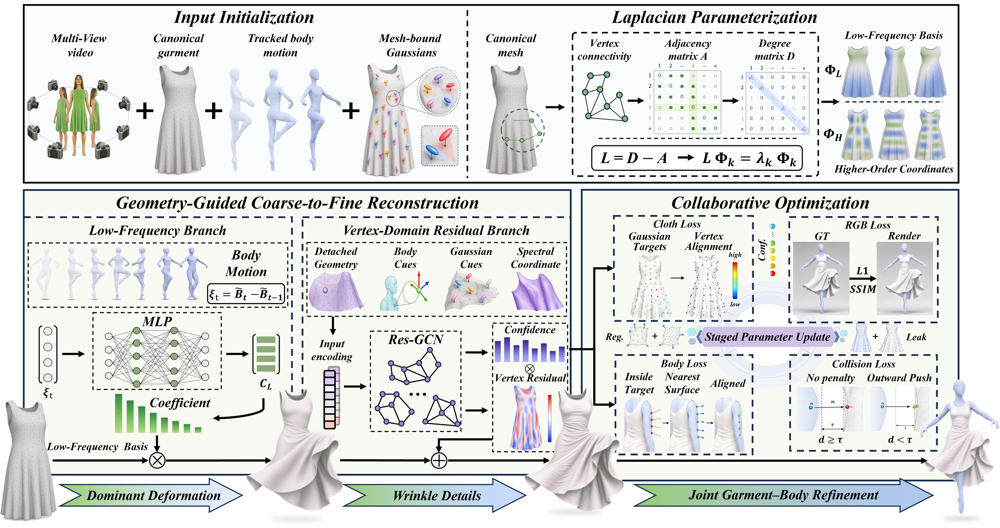
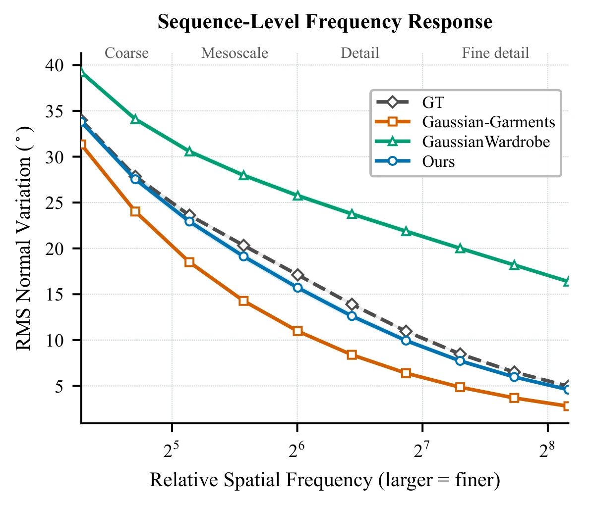
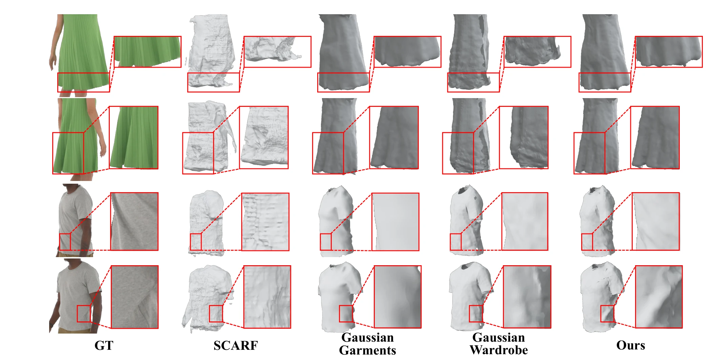
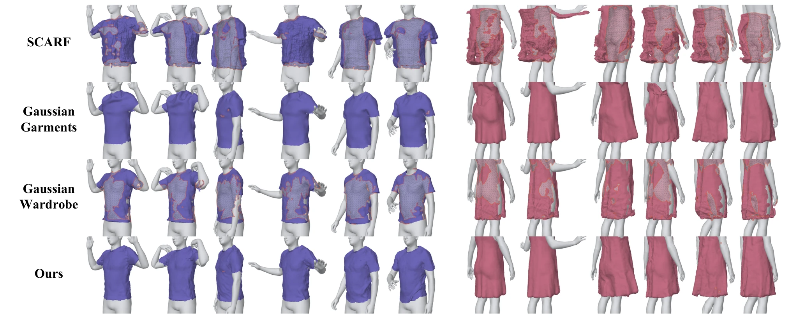
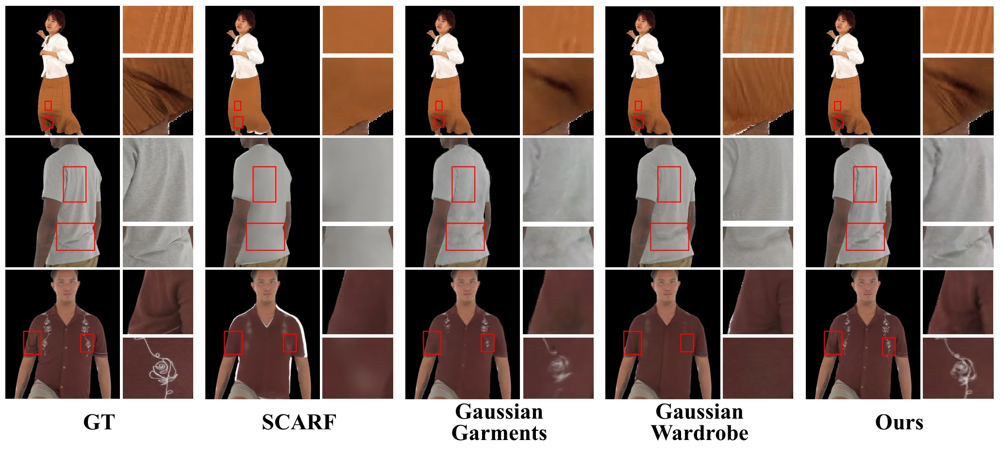
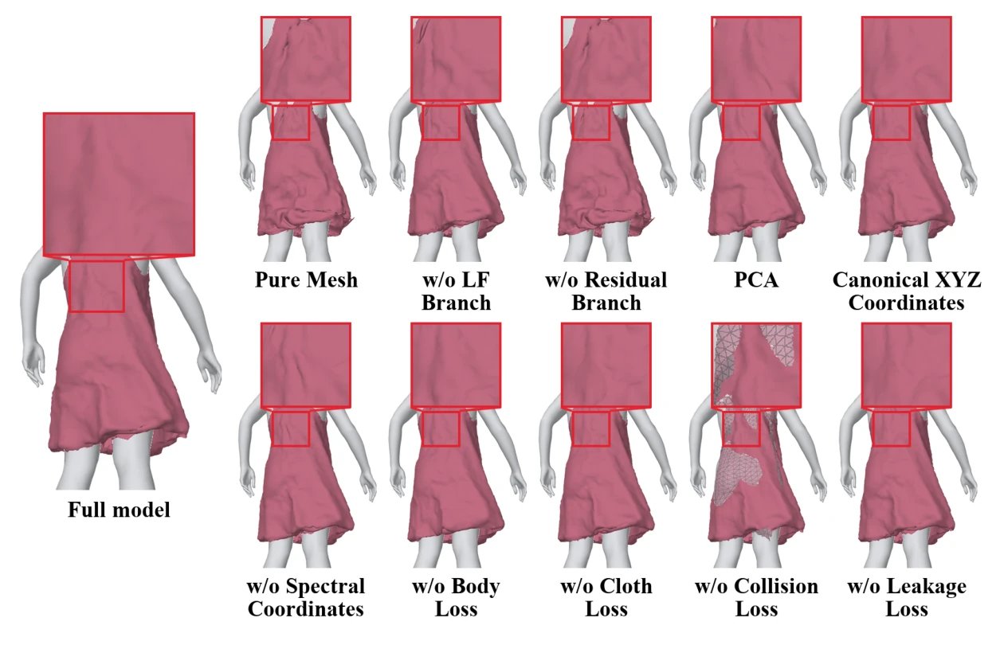

Anonymous Authors
Submitted to the IEEE Transactions on Image Processing (TIP).
Author information omitted for anonymous review.
Dynamic garment reconstruction from multi-view videos requires capturing both large-scale deformation and fine-scale wrinkle details. Existing methods address this cross-scale challenge through frequency-aware architectures or supervision. However, they rarely impose an explicit frequency-ordered structure on the deformation variables, making cross-scale separation and optimization less effective. We propose LSVR, a hybrid Laplacian spectral–vertex representation for coarse-to-fine garment reconstruction. LSVR first reconstructs coarse garment geometry using low-frequency coefficients of a mesh-fixed Laplacian eigenbasis. It then recovers fine-scale details through vertex-domain residuals conditioned on selected higher-frequency spectral coordinates. Finally, a staged collaborative optimization refines the garment mesh, mesh-bound Gaussian attributes, and body geometry under multi-view image supervision. Experiments on 4D-DRESS and ActorsHQ demonstrate that LSVR substantially improves geometric reconstruction accuracy and pixel-level rendering fidelity over existing methods while maintaining competitive perceptual quality.
Large-scale drape and fine wrinkles occupy different spatial scales, yet most methods optimize them in one shared deformation space, where global shape recovery and local detail refinement compensate for each other. LSVR builds the scale separation into the representation: a fixed Laplacian eigenbasis of the garment template carries the dominant deformation in a few low-frequency coefficients and guides vertex-domain residuals for fine wrinkles, while a staged Gaussian–garment–body optimization aligns the mesh with multi-view images and removes garment–body penetrations.


Garment and body meshes from the paper's comparison, shown in one shared camera. Drag to orbit, right-drag to pan, and scroll to zoom once you have clicked into the viewer. X-ray makes the body translucent to reveal penetration.
Baselines are shown with the tracked SMPL-X body and LSVR with its corrected body. SCARF is left out because its meshes are not in world coordinates. Gaussian Wardrobe outputs only Gaussian point clouds, so its garments are meshes we reconstruct from them with Poisson surface reconstruction.
LSVR against SCARF, Gaussian Garments and Gaussian Wardrobe under the same splits, preprocessing and protocol on four ActorsHQ and four 4D-DRESS sequences.




Each variant removes or replaces one component on ActorsHQ A01. Pick a variant to compare it with the full model under the same camera.

The Laplacian eigensystem is computed per garment template and kept fixed within a sequence, so spectral coordinates are not comparable across independently constructed templates. Future work will explore adaptive spectral subspace selection to generalize across diverse garment topologies and challenging configurations, including loose and layered garments.